Gain (derivation)
From the Einstein relations, the net stimulated rate for a beam of intensity  in a line of shape
in a line of shape
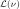
(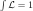
) gives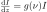
with as in the summary; the emission cross section is
as in the summary; the emission cross section is 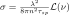
(Einstein 1917). Inversion is impossible in a two-level system with optical pumping (saturation gives at most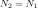
): three-level (ruby) or four-level (Nd:YAG, He-Ne) schemes are needed; four-level lasers have a nearly empty lower level and low threshold (Schawlow and Townes 1958).Threshold
Round trip:
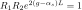
(amplitude) and phase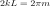
(frequency, the cavity modes). Hence . Photon lifetime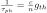
.Rate equations and clamping
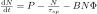
,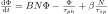
. Steady state above threshold: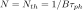
(clamped),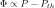
.Broadening
Homogeneous (natural, collisions): Lorentzian, all atoms share the line. Inhomogeneous (Doppler in gases): Gaussian,
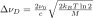
; several longitudinal modes can lase independently.Worked example
He-Ne at 632.8 nm,
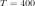
K, Ne mass 20 u: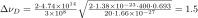
GHz. Cavity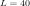
cm: mode spacing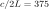
MHz → about 4 modes under the gain curve. Losses: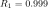
, :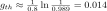
m ;
; 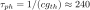
ns.Pulsed operation
Q-switching: hold the cavity loss high while pumping builds a large inversion, then switch the loss off: ns pulses of high peak power. Mode-locking: lock the phases of  longitudinal modes: pulses of duration
longitudinal modes: pulses of duration
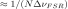
(fs in Ti:sapphire), repetition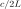
.Picture: output and gain versus pump
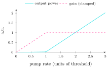
Above threshold every additional pumped atom is converted into a photon: gain and inversion stay at their threshold values while the output grows linearly.
Engineering applications
Laser machining (Q-switched Nd:YAG), surgery, LiDAR, metrology (stabilised He-Ne), frequency combs (mode-locked lasers), telecom transmitters (laser diodes).
Exam-style exercise
(a) Ratio of stimulated to spontaneous emission rates for a body in thermal equilibrium at 300 K, at 633 nm, 10.6 µm and 10 GHz. (b) What does it imply for building lasers and masers?
Solution
(a)
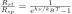
: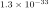
at 633 nm, 0.011 at 10.6 µm, 625 at 10 GHz. (b) At optical frequencies thermal light is overwhelmingly spontaneous: stimulated emission dominates only with a population inversion and a cavity that stores photons; microwave masers were easier because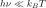
.Pitfall
Above threshold the gain does not increase with pumping: extra pump goes into photons. Measuring gain to estimate pump level only works below threshold.